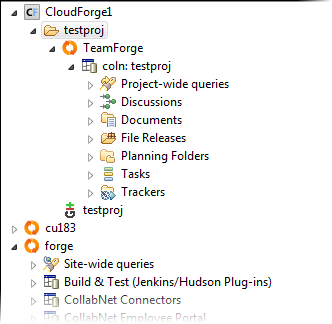

Whether you're a developer or project manager, you can enhance your CloudForge experience by adding your site to GitEye. Once you add your
site, you can add new projects and services or continue with your existing setup while
getting all the additional benefits GitEye
provides.
-
In the CollabNet Sites view,
click the Add CollabNet Site icon.
-
In the Add a CollabNet Site dialog, select
CloudForge for the site type and
click Next.
-
Enter a description for the site and click Next.
The description is displayed as the site name in the CollabNet
Sites view.
-
Provide your username, password and domain (for example, the name of your
organization) for the CloudForge site.
If you don't have a CloudForge account, you can sign up here.
-
Click Finish.
Your
CloudForge site appears in the
CollabNet Sites
view.
